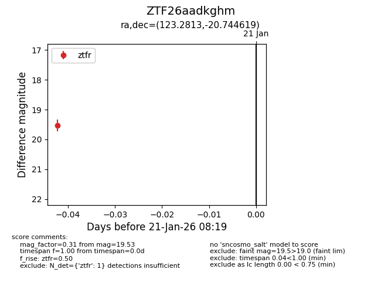
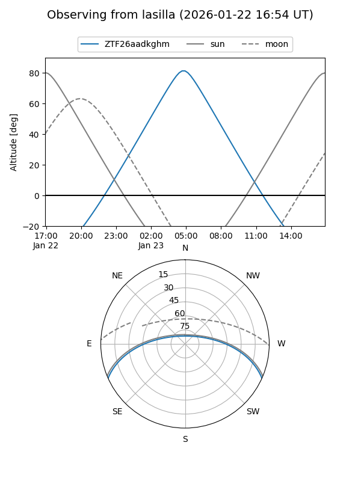
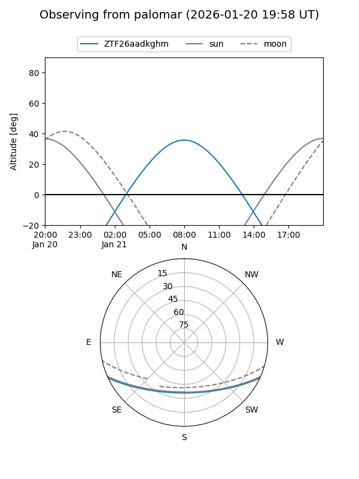

ZTF26aadkghm
Target ZTF26aadkghm at 2026-01-23 08:26
Aliases and brokers:
FINK: link
Lasair: link
ALeRCE: link
alt names
ZTF26aadkghm (ztf,fink_ztf)
Coordinates:
equatorial (ra, dec) = 123.2813,-20.74462
equatorial (HMS+DMS) = 08:13:07.52,-20:44:40.63
galactic (l, b) = (240.8320,+7.40598)
Flags:
Photometry:
last ztfr=19.53
1 ztfr detections
Lightcurve

Visibility


Additional plots